For years, the word "art" filled me with a heavy sense of dread especially when discussed it academically. I believed art demanded flawless technique like smooth brushstrokes, steady hands, and polished outputs I was certain I could never produce. I know that my strokes aren't smooth, and my hands feel so heavy when holding a pencil to draw or a brush to paint. Art was a great challenge for me, not until I took this course Art Appreciation in college where I discovered that art is not about perfection, but about connection, expression, and the transformative power of the process itself.
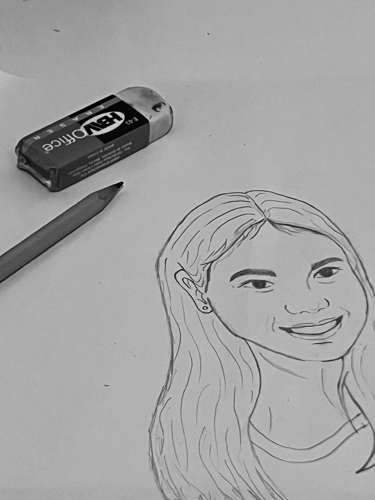
I love art. I have always been drawn to creative expression in small ways. I feel calm listening to music, I love dancing, I am amazed by paintings, and writing feels therapeutic. Overall, I know I am happy to enjoy works of art. However, I strictly separated enjoying art from making art. I struggle to create artwork myself.
At first, I was hesitant to speak up in class, worried my thoughts about art were wrong. But as we analyzed works from different periods from Renaissance masterpieces to modern performance art, I grew more confident sharing my perspectives. I began to see how art reflects the time, culture, and values of its creators. This cultural and contextual awareness deepened my appreciation for all forms of creative expression.
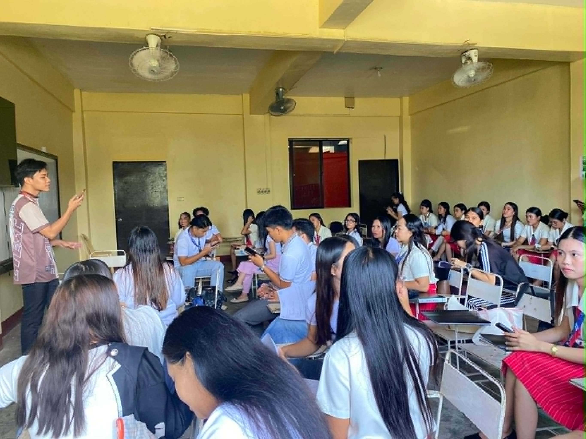
The turning point came in our Art Appreciation classes. I finally understood what art truly is. Through discussions on art history, cultural contexts, and contemporary works, I learned that a painting's beauty lies not just in its lines or colors, but in the stories it tells and the emotions it evokes. This realization that imperfection is often what makes art meaningful helped me let go of my fear of judgment.
As I grew comfortable, I also became more productive and confident which led me to start creating art. I write poems, even if they do not rhyme. I find them beautiful because I noticed my anxiety melting away as I put words to paper, each line felt like a small step toward healing.
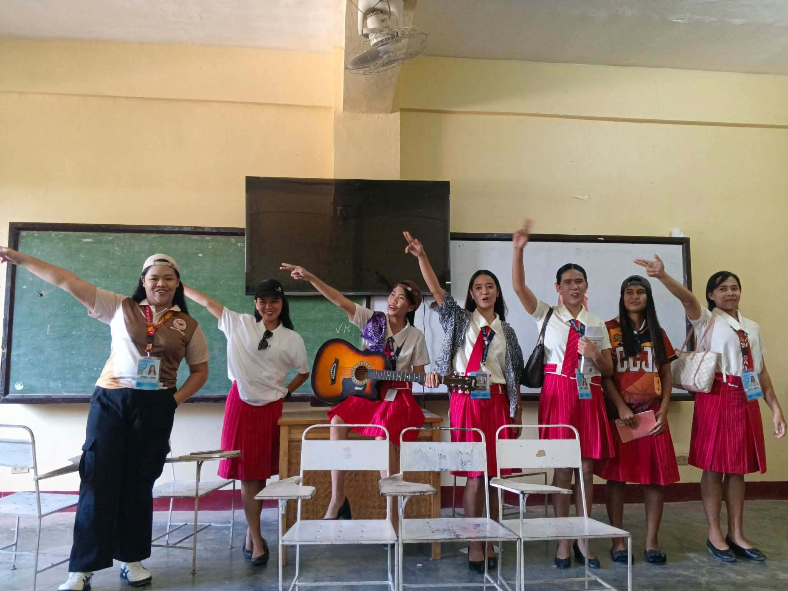
I started singing aloud, not caring if I hit every note. For the first time, I felt free to use my voice, a part of myself I had long been insecure about. "So what if it doesn't sound 'good'?" I'd tell myself. "It makes me happy."
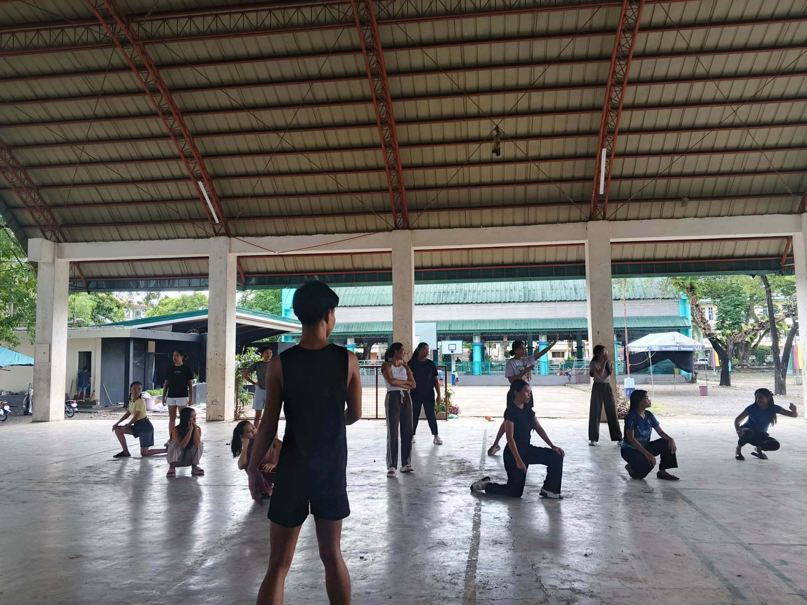
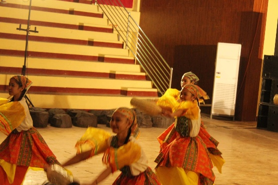
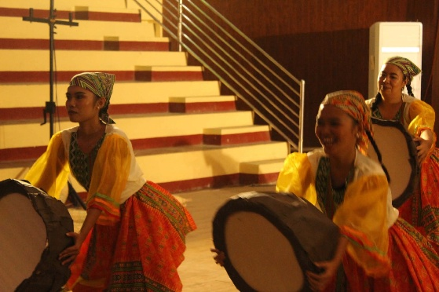
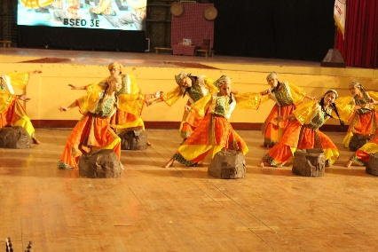
I joined a festival dance group, even though my background is in ballet and contemporary styles, worried I wouldn't keep up, but practice sessions became moments of joy, I learned to move with the group. ▶ Watch on Facebook
I was also invited to be part of a musical drama. During our brainstorming, my shared ideas led the group to ask me to be the scriptwriter. I was not confident in my ideas at first, but they pushed me forward. Their willingness to perform and trust in my vision fueled me to begin. I brainstormed appropriate characters, relevant social issues, and themes; then I wrote, compiled my thoughts, refined the flow, and planned out what needed to be done and avoided to ensure the play would run smoothly. Seeing my ideas come to life through the cast's performance showed me that art is a shared journey. ▶ Watch Musical Drama on Facebook
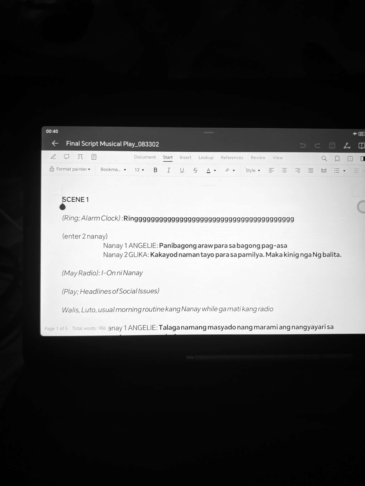
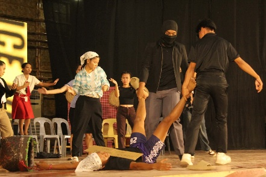
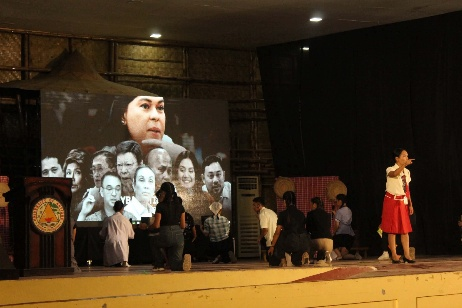
Overall, art has truly touched my life and transformed me. What changed me as a person most is the realization that art is not just about physical outputs, it is about the emotions and experiences we feel throughout the creative process. These are the small, often overlooked details that matter most.
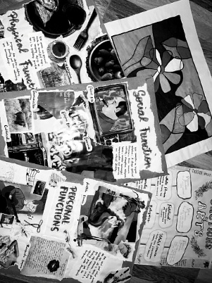
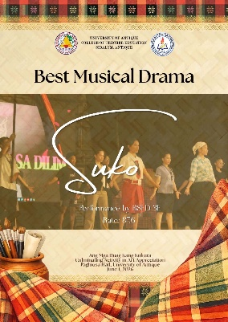
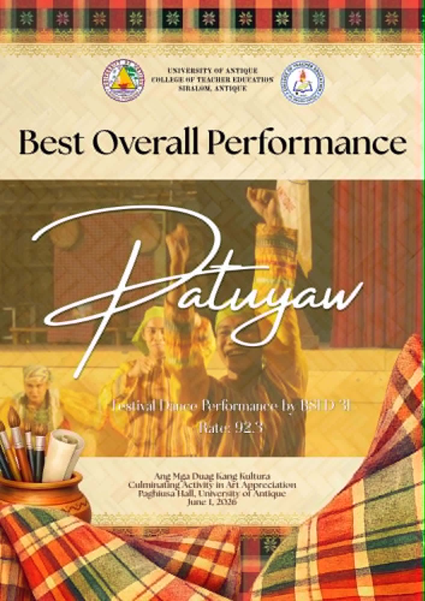
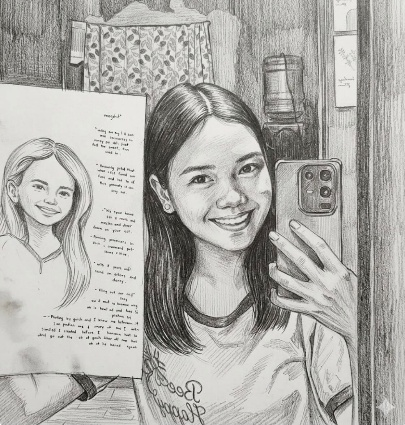
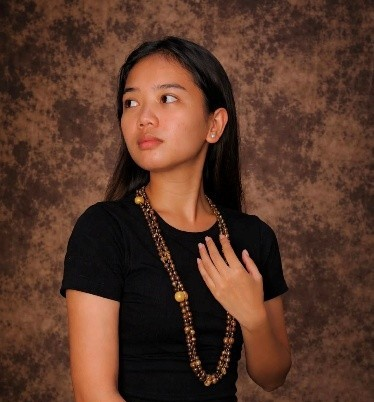
Art has touched every part of my life, reshaping how I see myself and the world around me. I now understand that the most important aspects of art cannot be measured or described in words, they are felt in the act of creating, sharing, and experiencing. Whether it's the release of writing, or the energy of dancing, art connects us to our emotions and to each other. These are the small, often overlooked details that matter most.
"The most important thing cannot be said, it is done, it is felt."
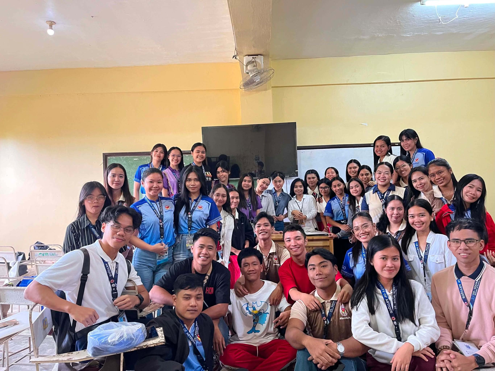
This course did more than teach me about art, it taught me to embrace my own creativity without fear. I no longer see imperfection as a flaw, but as a marker of authenticity that makes my contributions unique.